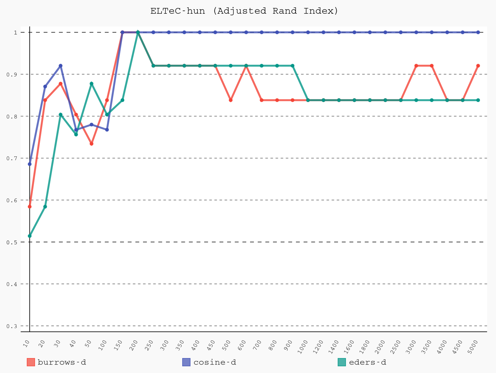

#### Digital, mehrsprachig, interdisziplinär, vernetzt: die COST Action _Distant Reading for European Literary History_ <img height="50" data-src="img/basics/distant-reading_logo.jpg"> <hr/> <br/> <p>Christof Schöch (Trier)</p> <br/> <p><strong>Folien: <a href="https://dh-trier.github.io/elh/#/">dh-trier.github.io/elh/</a></strong></p> <p><strong><emph>DHC & CeDiS | FU Berlin | 25. Feb 2021</strong></p> <hr/> <img height="50" data-src="img/basics/uni-trier.png"> -- ## Überblick 1. [Was ist eigentlich eine COST Action?](#/2) 2. [Worum geht es in "Distant Reading"?](#/3) 3. [Korpusaufbau: Die European Literary Text Collection](#/4) 4. [Methodenexploration: Stilometrie](#/5) 5. [Literaturtheorie: Beispiel Kanonisierung](#/6) 6. [Abschluss](#/7) -- ## 1. Was ist eigentlich<br/>eine COST Action? --- ### Netzwerk-Projekt * Aufbau von Netzwerken und "capacity building" zu bestimmten Forschungsthemen (keine Infrastruktur) <!-- .element: class="fragment" data-fragment-index="1" --> * Netzwerk aus Partnern in europäischen Ländern und darüber hinaus <!-- .element: class="fragment" data-fragment-index="2" --> * Es laufen immer ungefähr 300 Actions parallel (!) <!-- .element: class="fragment" data-fragment-index="3" --> * Nur vergleichsweise wenige davon in den Geisteswissenschaften <!-- .element: class="fragment" data-fragment-index="4" --> :: - Ziemlich großes Programm, aber in den GW wenig bekannt - Dennoch ziemlich schwierig zu bekommen, Bewilligungsquote von 7% --- ### Einige relevante COST Actions * [Interedition](http://www.interedition.eu/), 2008-2012 (Digitale Edition) * [European Network of e-Lexicography](https://www.elexicography.eu/), 2013-2017 (Lexikographie) * [Reassembling the Republic of Letters](http://www.republicofletters.net/), 2015-2018 (Literatur-/Kulturgeschichte) * [NEP4DISSENT - Cultures of Dissent](https://nep4dissent.eu/), 2017-2021 (Zeitgeschichte) * [Nexus Linguarum](https://nexuslinguarum.eu/), 2019-2023 (Linguistic Data Science) --- ### Ein paar typische Eigenschaften * Laufzeit von 4 Jahren <!-- .element: class="fragment" data-fragment-index="1" --> * In Arbeitsgruppen strukturiert <!-- .element: class="fragment" data-fragment-index="2" --> * Keine Personalmittel, sondern Mittel für Netzwerk-Aktivitäten (Reisemittel) <!-- .element: class="fragment" data-fragment-index="3" --> * Verschiedene Typen von "networking activities" <!-- .element: class="fragment" data-fragment-index="4" --> * "Short Term Scientific Missions" * Training Schools * Working Group Meetings -- ## 2. Worum geht es bei *Distant Reading for European Literary History*? --- ### Was bedeutet "Distant Reading"? * Franco Moretti ("second-hand" reading) <!-- .element: class="fragment" data-fragment-index="1" --> * Dann Bedeutungserweiterung: jede Art der quantitativen Analyse literarischer Texte <!-- .element: class="fragment" data-fragment-index="2" --> * Engerer Begriff: Stilometrie (= quantitative Methoden der Autorschaftsattribution) <!-- .element: class="fragment" data-fragment-index="3" --> * Neuerer Begriff mit stärker technischem Fokus: Computational Literary Studies <!-- .element: class="fragment" data-fragment-index="4" --> --- ### Projektziele: Forschung * Ressourcen: Aufbau eines mehrsprachigen Benchmarking-Korpus des europäischen Romans (ELTeC) <!-- .element: class="fragment" data-fragment-index="1" --> * Methoden: Erproben, evaluieren, anpassen und verbreiten von Distant Reading-Methoden <!-- .element: class="fragment" data-fragment-index="2" --> * Theorie: Die Konsequenzen digitaler Methoden und Daten für die Theorie der Literaturwissenschaft durchdenken <!-- .element: class="fragment" data-fragment-index="3" --> --- ### Projektziele: Community * Forschende aus Korpuslinguistik, Computerlinguistik, digitaler Literaturwissenschaft, und Literaturgeschichte und -theorie zusammenbringen <!-- .element: class="fragment" data-fragment-index="1" --> * Kompetenzen in diesen Bereichen austauschen und verbreiten <!-- .element: class="fragment" data-fragment-index="2" --> * Beteiligte dabei unterstützen, gemeinsame, internationale Projekte zu beantragen <!-- .element: class="fragment" data-fragment-index="3" --> --- ### Ein paar Eckdaten * Laufzeit: Ende 2017 bis Ende 2021 * 32 Länder sind involviert * 200+ Forschende sind beteiligt * inzwischen diverse Projekte im Umkreis -- ## 3. Ressourcen: ELTeC --- ### European Literary Text Collection (ELTeC) * Vergleichbare Sets von Romanen in mindestens 10 europäischen Sprachen (derzeit 17 in Arbeit) * Jedes Set: 100 Romane aus der Zeit 1840-1920; dazu sogenannte "extensions" * Aktueller Stand: über 1100 Romane sind verfügbar (in XML-TEI) * Weitere Infos: https://www.distant-reading.net/eltec/ --- ### Korpusaufbau (1): Textkodierung * Alle Texte sind in XML-TEI kodiert (Text Encoding Initiative) <!-- .element: class="fragment" data-fragment-index="1" --> * Es gibt drei Kodierungslevel (Schemas mit ODD-Chaining realisiert) <!-- .element: class="fragment" data-fragment-index="2" --> * level 0: minimaler Markup * level 1: etwas mehr, stärker semantischer Markup * level 2: Text zusätzlich mit linguistischer Annotation --- ### Korpusaufbau (2): "eligibility" * Roman (fiktionale Erzählprosa von 10.0000+ Wörtern) <!-- .element: class="fragment" data-fragment-index="1" --> * Erstpublikation zwischen 1840 und 1920 <!-- .element: class="fragment" data-fragment-index="2" --> * In einem europäischen Kontext erschienen <!-- .element: class="fragment" data-fragment-index="3" --> * Erstmals in der Sprache der jeweiligen Sammlung publiziert (keine Übersetzungen) <!-- .element: class="fragment" data-fragment-index="4" --> --- ### Korpusaufbau (3): Textauswahl * Mindestens 10%, besser 30% der Romane von Autorinnen <!-- .element: class="fragment" data-fragment-index="1" --> * Mindestens 30% Romane mit wenig Neuauflagen <!-- .element: class="fragment" data-fragment-index="2" --> * Jeweils mindestens 20% kurze, mittellange und lange Romane (<50k, 50-100k, >100k) <!-- .element: class="fragment" data-fragment-index="3" --> * 9-11 Autor:innen mit drei Romanen, alle übrigen nur 1 Roman <!-- .element: class="fragment" data-fragment-index="4" --> * Gleichmäßige Verteilung über die Zeit <!-- .element: class="fragment" data-fragment-index="5" --> --- ### ELTeC im Überblick </img> <br/>https://distantreading.github.io/ELTeC/ --- ### Zentrale Herausforderung:<br/>das "Diversity Paradox" * Rahmenbedingungen <!-- .element: class="fragment" data-fragment-index="1" --> * Unterschiedliche Verfügbarkeit digitaler Texte (bspw.: fra vs. rom) * Unterschiedliche Traditionen, bspw. Länge der Romane (bspw. eng vs. slv) * Relevante Metadaten sind nicht in Katalogen enthalten * Vergleichbarkeit der Sammlungen ist wichtig * Daraus folgt das "diversity paradox" <!-- .element: class="fragment" data-fragment-index="2" --> * Diversity der Sprachen: Kriterien müssen flexibel sein * Diversity der Romane, Vergleichbarkeit: Kriterien müssen streng sein -- ## 4. Methodenexploration: <br/>Beispiel Stilometrie --- ### Ziele der Methodenexploration * Vorhandene Methoden des "Distant Reading" auf verschiedene europäische Sprachen anpassen/anwenden <!-- .element: class="fragment" data-fragment-index="1" --> * Methoden erproben, die für Analysen über mehrere Sprachen hinweg geeignet sind <!-- .element: class="fragment" data-fragment-index="2" --> * Methodenkompetenzen in der europäischen Community entwickeln (ECI / ITC) <!-- .element: class="fragment" data-fragment-index="3" --> --- ### Einige laufende Methodenexplorationen * Sprachübergreifend vergleichbare linguistische Annotation (POS) <!-- .element: class="fragment" data-fragment-index="1" --> * Sprachübergreifende Named Entity Recognition (NER) <!-- .element: class="fragment" data-fragment-index="2" --> * Sprachübergreifende Erkennung der direkten Rede <!-- .element: class="fragment" data-fragment-index="3" --> * Methoden der stilometrischen Autorschaftsattribution (in Vorbereitung)<br/><br/><!-- .element: class="fragment" data-fragment-index="4" --> * Publikationen zum aktuellen Stand: <!-- .element: class="fragment" data-fragment-index="5" --> * Cinkova et al. DH_Budapest 2019 * Stankovic et al. DH_Budapest 2019 * Frontini et al. CLARIN2020 * Byszuk et al. LREC2020. --- ### Beispiel: Stilometrie * Quantitative Autorschafts-Attribution <!-- .element: class="fragment" data-fragment-index="1" --> * Basiert auf der Information über Häufigkeiten von Wörtern (Vektormodell) <!-- .element: class="fragment" data-fragment-index="2" --> * Viele kleine Unterschiede sind entscheidend (Burrows) <!-- .element: class="fragment" data-fragment-index="3" --> * Bekannte Anwendungsfälle <!-- .element: class="fragment" data-fragment-index="4" --> * Elena Ferrante / Domenico Starnone + Anita Raja * Robert Galbraith (Joan K. Rowlings): The Cuckoo's Calling * Corneille et Molière * Shakespeare and Marlowe * uvm. * Ziel in der Action: Evaluation von stilometrischen Methoden über viele Sprachen hinweg <!-- .element: class="fragment" data-fragment-index="5" --> --- ### Vorgänger-Publikation </img> --- ### Einzelne Dendrogramme <a href="img/ELTeC-fra_eders-d_1000.png"><img height="500" data-src="img/ELTeC-fra_eders-d_1000.png"></a> <a href="img/ELTeC-rom_eders-d_1000.png"><img height="500" data-src="img/ELTeC-rom_eders-d_1000.png"></a> <br/>ELTeC-fra ELTeC-rom --- ### Evaluation <a href="img/results_ELTeC-hun.svg"></a></img> <a href="img/results_ELTeC-fra.svg"></img></a><br/><a href="img/results_ELTeC-rom.svg"></a></img> <a href="img/results_ELTeC-slv.svg"></img></a><br/><br/>(Aktuell: deu, eng, fra, hun, por, rom, slv) --- ### Nächste Schritte * Berücksichtung weiterer Sprachen * Sampling und Messung der Varianz (benötigt ggfs. mehr Texte) * Diskussion der Einzelergebnisse mit den jeweiligen Spezialist:innen für die Literaturen -- ## 5. Literaturtheorie --- ### Ziele des Arbeitsgebiets * Konsequenzen der digitalen Daten und Methoden für die Literaturtheorie durchdenken <!-- .element: class="fragment" data-fragment-index="1" --> * Einige Schlüsselkonzepte <!-- .element: class="fragment" data-fragment-index="2" --> * Autorschaft * Periodisierung * Kanonisierung * Intertextualität * Internationalität --- ### Beispiel der Kanon/Kanonisierung * Kanon: gesellschaftlicher/wissenschaftlicher Konsens<br/>=> Liste "wichtiger" Texte <!-- .element: class="fragment" data-fragment-index="1" --> * Pflichtlektüre in Schule oder Universität * Andauernde Interpretierbarkeit und Relevanz * Komplexität, Qualität, Bedeutung * Kanonisierung <!-- .element: class="fragment" data-fragment-index="2" --> * Prozess, wie sich dieser Konsens herausbildet * Prozess, wie ein Text in den Kanon aufgenommen wird * Unsere Fragen <!-- .element: class="fragment" data-fragment-index="3" --> * Wie hängen text-externe und text-internen Eigenschaften mit Kanonisierung zusammen? * Wie hängen diese Eigenschaften miteinander zusammen * Wie können wir dies quantitativ modellieren? --- ### Indikatoren <br/><br/> <small> |text-extern| |text-intern| |:-----:||:-----:| |Auflagen, Auflagenhöhe||Lexikalische Komplexität| |Bibliotheksbestandszahlen||syntaktische Komplexität| |Textumfang in Literaturgeschichten||"readability"-Scores| |Anzahl von Wikipedias mit Artikel||Komplexität des Plots| |Anzahl von Nennungen auf Lektürelisten||"Wichtige" Themen| |Anzahl und Art der Preise||uvm.| </small> -- ## Abschluss --- ### Mein Fazit * Rund um ELTeC und unsere drei Arbeitsbereiche ist eine lebendige, engagierte europäische Community entstanden <!-- .element: class="fragment" data-fragment-index="1" --> * In den nächsten 6-12 Monaten wollen wir hier noch Einiges zum Abschluss bringen (trotz Pandemie-Bedingungen) <!-- .element: class="fragment" data-fragment-index="2" --> * ELTeC werden wir weiter entwickeln und es wird denke ich viel spannende Forschung damit passieren <!-- .element: class="fragment" data-fragment-index="3" --> * Parallel startet ein Anschlussprojekt: "Computational Literary Studies Infrastructure" (H2020 Starting Community, ab März 2021) <!-- .element: class="fragment" data-fragment-index="4" --> --- <img height="580" data-src="img/danke.png" alt="https://www.sprachheld.de/"> <br/> * https://distant-reading.net --- ### Weitere Informationen * http://distant-reading.net/ * https://github.com/distantreading * http://www.cost.eu/COST_Actions/ca/CA16204 * https://twitter.com/DistantReading --- ### Lektüreempfehlungen <small> * Frontini, Francesca; Brando, Carmen; Byszuk, Joanna; Galleron, Ioana; Santos, Diana; Stanković, Ranka: "Named Entity Recognition for Distant Reading in ELTeC", 2020. <https://www.clarin.eu/event/2020/clarin-annual-conference-2020-virtual-form> * Burnard, Lou; Schöch, Christof; Odebrecht, Carolin. “In Search of Comity: TEI for Distant Reading.” November 1, 2019. https://doi.org/10.5281/zenodo.3552489. * Byszuk, Joanna, Michał Woźniak, Mike Kestemont, Albert Leśniak, Wojciech Łukasik, Artjoms Šeļa, and Maciej Eder. “Detecting Direct Speech in Multilingual Collection of 19th Century Novels.” In Proceedings of LT4HALA 2020-1st Workshop on Language Technologies for Historical and Ancient Languages, edited by Rachele Sprungoli and Marco Passarotti, https://lrec2020.lrec-conf.org/media/proceedings/Workshops/Books/LT4HALAbook.pdf:100–104. Paris: European Language Resources Association (ELRA), 2020. * Cinková, Silvie, et al. “Evaluation of Taggers for 19th-Century Fiction.” DH_Budapest_2019, edited by Gábor Pálko, ELTE, 2019, http://elte-dh.hu/dh_budapest_2019-abstract-booklet/. * Evert, Stefan, Fotis Jannidis, Thomas Proisl, Steffen Pielström, Thorsten Vitt, Christof Schöch, and Isabella Reger. “Understanding and Explaining Distance Measures for Authorship Attribution.” Digital Scholarship in the Humanities, 2017. https://academic.oup.com/dsh/article-pdf/32/suppl_2/ii4/21298943/fqx023.pdf. * Patras, Roxana, Ioana Galleron, Camelia Gradinaru, Ioana Lionte, and Lucreţia Pascaru. “The Splendors and Mist(Eries) of Romanian Digital Literary Studies: A State-of-the-Art Just before Horizons 2020 Closes Off.” Hermeneia 23 (2019): 207–22. * Stankovic, Ranka, Francesca Frontini, Tomaž Erjavec, and Carmen Brando. “Named Entity Recognition for Distant Reading in Several European Literatures.” In DH_Budapest_2019, edited by Gábor Pálko. Budapest: ELTE, 2019. http://elte-dh.hu/dh_budapest_2019-abstract-booklet/. * Schöch, Christof; Roxana Patras; Tomaž Erjavec; Diana Santos: "Creating the European Literary Text Collection (ELTeC): Challenges and Perspectives", submitted. </small> --- <br/> <br/> <br/> <br/> <br/> <br/> <br/> <br/> <br/> <br/> <br/> <hr/> <p><a href="https://creativecommons.org/licenses/by/4.0/">CC-BY 4.0</a><br/></p> <hr/> <br/> <br/> </script> </section>